CS184 / 284A · 5.2A Final report
Iridescent Pathtracer
Group
- Crystal LaMar
- Kellen Galban
- Isaac Jones
- Sofia Valadez
Links & media
Course site hub: CS184 Final Project Webpage (this repository’s GitHub Pages).
Milestone deck: Presentation slides.
Progress / showcase video: YouTube — milestone progress video (embedded below under Results as required course media).
Abstract
The goal of this project is to model thin-film iridescent appearance in a Monte Carlo path tracer built on Homework 3. Iridescence arises from wavelength-dependent interference in a thin transparent film, which plain RGB tracing cannot reproduce faithfully. We refactored the renderer so rays carry a discrete spectral representation through multiple bounces, implemented a dedicated thin-film BSDF with Airy-style interference and Snell-aware phase behavior, and converted to display RGB only at the end of raytrace_pixel, with CIE/XYZ-aware color handling so spectra map to plausible sRGB output. We authored COLLADA scene content tuned for bubbles, gemstones, and dragon assets to stress-test grazing angles and complex geometry. The result is a spectral path tracer that produces angle- and wavelength-dependent color fringing consistent with thin-film physics, along with a portfolio of still renders across bubble-themed scenes.
Technical approach
Creating ColorVector (spectral light transport)
Because the RGB path tracer from HW3 cannot simulate thin-film interference—iridescence depends on how individual wavelengths add and cancel—we introduced a color vector type to replace Vector3D for path throughput during transport.
The ColorVector class stores a discrete spectral representation of radiance: 40 wavelength samples spanning 400–800 nm in the report’s baseline description, with later engineering extending resolution for finer sampling where noted in individual contributions. Every stage of the path integral that previously assumed RGB was refactored so pathtracer.cpp threads spectra through bounces; we only collapse to three-channel RGB at raytrace_pixel, after integrating over the path.
Bouncing spectral throughput
We modified the recursive path formulation and BSDF evaluation paths so that newly implemented ColorVector values propagate through each bounce: indirect illumination, environment sampling, and material response all multiply and accumulate in spectrum space. That invariant ensures thin-film modulation applied per wavelength remains consistent with global illumination rather than being “painted on” as a post-process.
ThinFilm BSDF
To capture iridescent reflection from a thin transparent layer (soap film, nano-coating, etc.), we implemented a thin-film BSDF. Important routines include calculate_phase_shift(), which quantifies the extra optical path as a refracted ray traverses the film, and evaluate_interference(), which combines reflected and transmitted field contributions per wavelength using Snell’s law at interfaces. This couples naturally to the spectral pipeline: the same incident direction can be strongly reflected at, say, 520 nm while partially cancelling near 650 nm, producing the characteristic rainbow-like swing with angle.
Scene authoring & COLLADA
We extended parsing so .dae assets can declare film thickness, indices of refraction, and assignment of the thin-film BSDF, letting artists place bubbles and coated solids without recompiling. Scene evolution moved from single bubbles in simple rooms to multi-bubble Cornell setups, gemstone bubbles, Lambertian spheres with thin films, and dragon models (CBdragon_film lineage), deliberately exercising grazing viewing directions where interference variation is strongest.
Pipeline & design evolution
The following summarizes how the implementation diverged from “plain HW3 RGB” into a coherent spectral system—useful for readers comparing our milestone write-up to the final codebase.
Baseline
We started from the Homework 3 path tracer: Russian roulette, BSDF sampling, environment maps, and ray primitives were intact; the main change was replacing internal color algebra with spectrum-aware types.
Spectral representation
We introduced spectrum helpers and migrated BSDF code—especially thin-film evaluation—toward ColorVector so wavelength-dependent effects integrate uniformly across materials rather than as special-case RGB hacks.
Thin-film BSDF (Airy interference)
The ThinFilmBSDF realizes Airy-style thin-film terms, wired to ColorVector and to parameters supplied through Collada/XML. Logic in bsdf.cpp evolved as we aligned phase shifts, Fresnel terms, and path throughput.
Path throughput contract
The tracer enforces a simple contract: spectra travel through all bounces; RGB appears only after the final pixel integral. That reduced bugs where a partial RGB conversion upstream desaturated interference patterns.
Sampling & global illumination
sample_f and related BSDF sampling code were revised alongside path-tracing tweaks. Environment lighting was refactored so sampled environment directions feed the continuation ray directly—cleaner coupling between importance sampling the env map and the spectral throughput on the next vertex.
Color science at lights
ColorVector gained const-correctness and tuned wavelength metadata for emitters. Later work added CIE-oriented transforms and XYZ handling, spectrum initialization for lights, and integration fixes so emitted radiance matches the spectral pipeline.
Light interface refactor
A larger pass trimmed pathtracer.cpp, introduced light_info.h, and funneled ambient, area, directional, point, and spot sources through a unified descriptor so spectral shading sees one coherent light record type.
Ongoing BSDF / spectral polish
Subsequent edits continued to adjust bsdf.cpp and color_vector.cpp, tightening spectral-to-RGB conversions and thin-film edge cases rather than restructuring the whole renderer again.
DAE progression & authoring intent
The XML/Collada parser was updated to ingest thin-film BSDF parameters. Scene files accumulated bubble motifs: single bubble rooms; multi-bubble bunnies; gemstone bubble; dragon-with-film; Lambertian spheres with film; iterative tuning of n_bubble_ball / n_bubble_bunny. Commits explicitly set diffuse colors for cross-material consistency and occasionally zeroed a light color where reference matching demanded—that kind of scene discipline prevented “mystery brightness” when comparing against expectations.
Issues encountered
As is well known in graphics, debugging Monte Carlo renderers is painful—we hit several bottlenecks.
- Color spaces early on: We initially failed to route spectra through XYZ before RGB. Converting tabulated spectral power directly to RGB without an intermediate observer model produced bizarre hues; incorporating the xyz “human-visible” basis fixed the mismatch.
- Scene exposure: Some generated
.daefiles were extremely bright, producing washed-out early renders. We iterated on light intensities, materials, and camera tonality until reference frames were in a sensible dynamic range. - General interference debugging: Subtle sign errors in optical path length or mixed RGB/spectrum code paths manifested as metallic-looking surfaces instead of thin-film-like highlights; systematic asserts around spectrum invariants and side-by-side wavelength plots helped isolate issues.
Lessons learned
- Physical intuition: We already knew iridescence existed; building it forced a precise picture of how partial waves recombine after reflecting from the top and bottom of a film—why bubbles flash cyan at one angle and magenta at another.
- BSDFs as modular optics: Thin-film behavior slots naturally into a BSDF interface alongside specular, diffuse, and refraction lobes; probability masses in sampling code are as important as the analytic BRDF value.
- XYZ is not optional for spectral renderers: Human color is defined through CIE color-matching functions. Skipping XYZ when integrating spectra into a display space yields “almost right” results that are still visibly wrong—particularly for narrowband interference peaks.
Results
Showcase animation (course requirement)
The course asks for a short clip, GIF, movie, or animation of final output. Below is our milestone progress video; replace or augment with a shorter looping GIF in showcase/images/ if you publish a new cut for the final session.
<img> in this section pointing to your final-loop asset, e.g. images/showcase_loop.gif, for a lightweight autoplaying preview on the report page.
Still renders (showcase/images)
All images below are served from this report’s showcase/images folder—bubble studies plus iridescent dragon. Click any image to open the full-resolution PNG in a new tab.
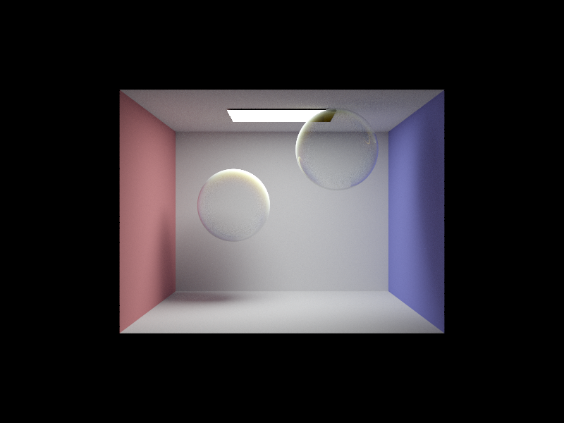
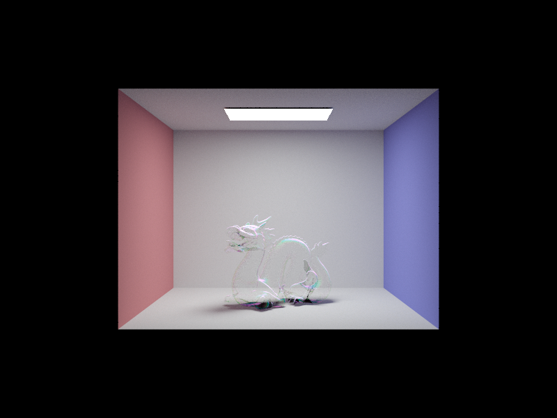
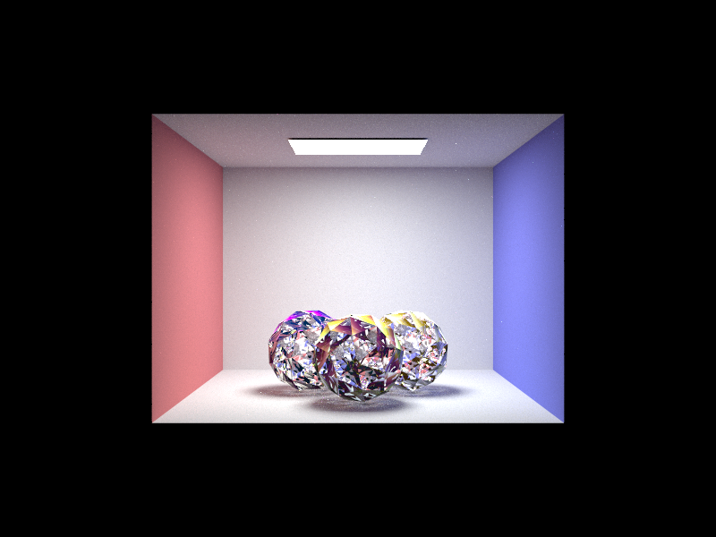
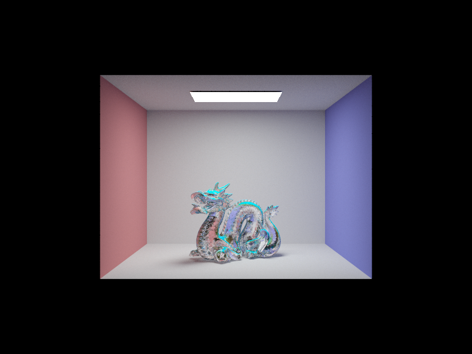
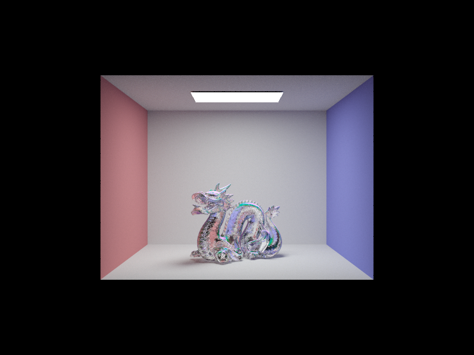
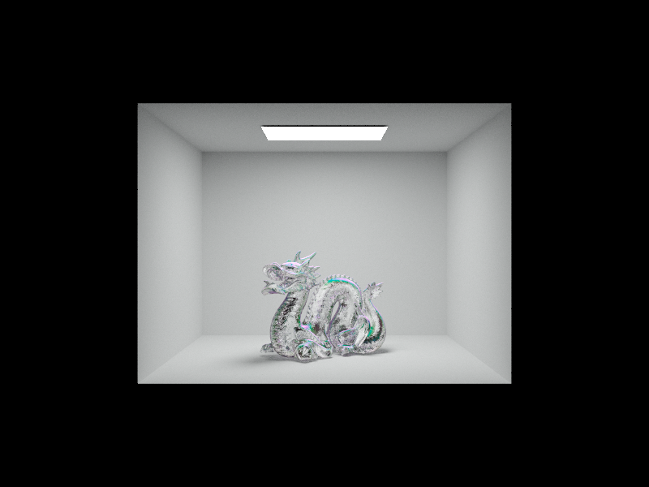
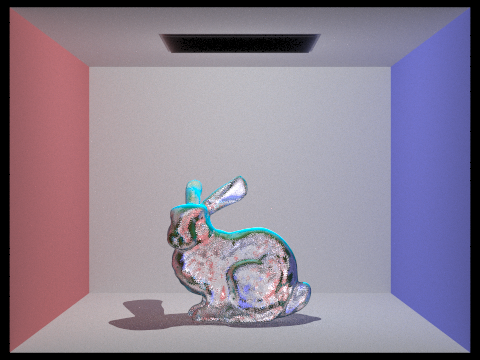
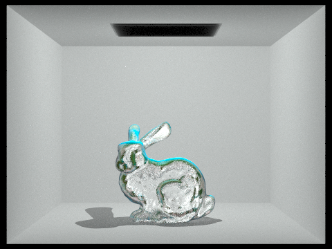
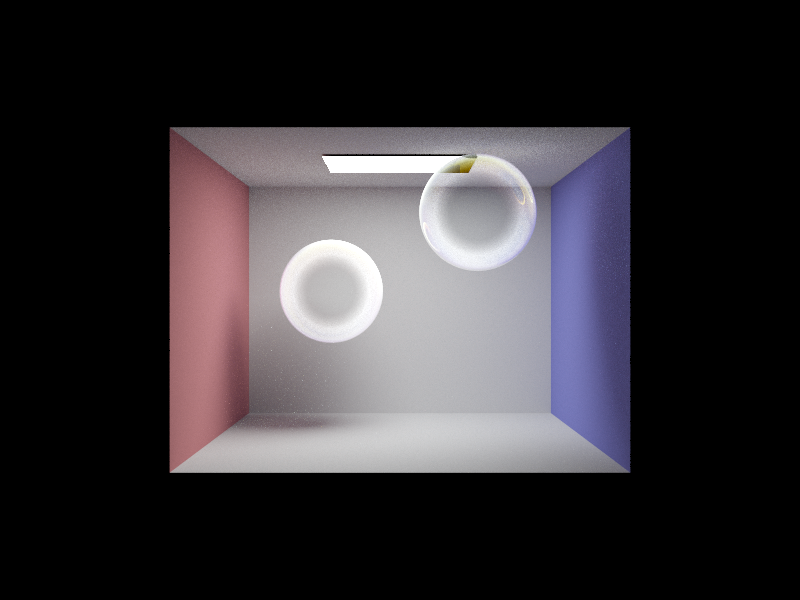
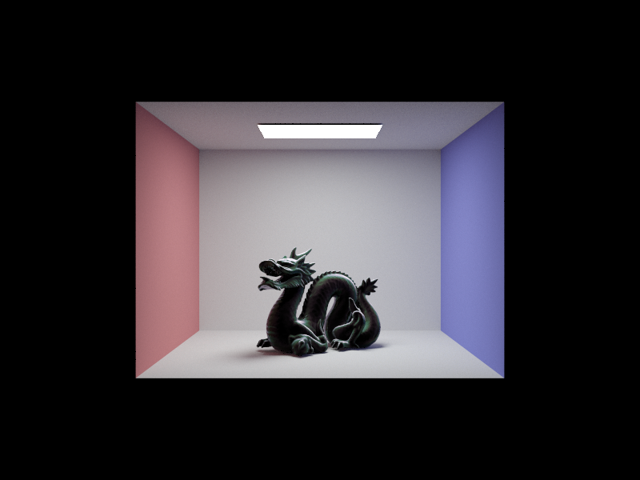
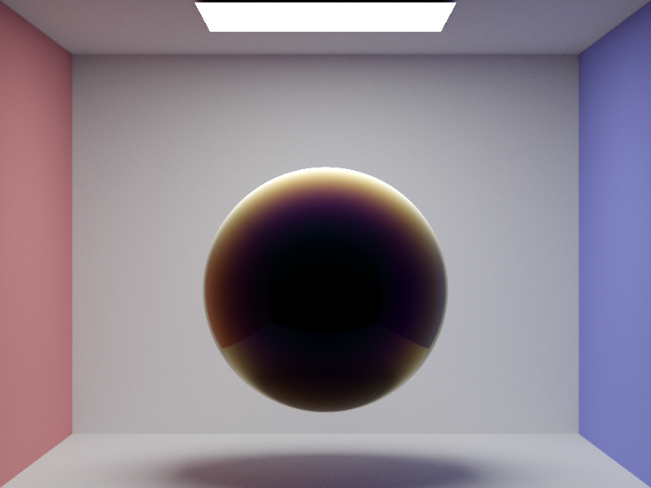

References
These references helped us reason about wavelength-dependent transport, thin-film phase, and bubble optics—both numerically and conceptually.
- Nigel Morris, Capturing the Reflectance Model of Soap Bubbles — primary motivation for spectrum → XYZ → RGB workflow and bubble reflectance behavior.
- General references on wavelength-dependent reflectance and thin-film interference in rendering.
- Jelly Renders — Simple iridescent material (practical shader-level intuition).
- GameDev.net — Thin-film interference for computer graphics.
- CS184 Spring 2026 — Homework 3 (base path tracer).
Contributions from each team member
- Crystal:
- Kellen:
- Isaac: conversion of the rendering pipeline from
Vector3D(RGB) toColorVector(97-wavelength spectrum). - Sofia: development of COLLADA files (specifically items with BSDF that resembled bubbles).
Blank entries mirror the submitted draft; fill in Crystal’s and Kellen’s bullets before the final portfolio freeze.